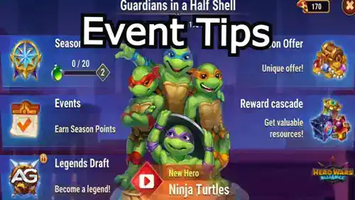
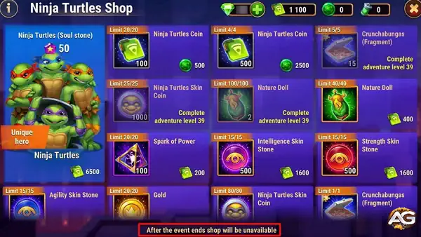
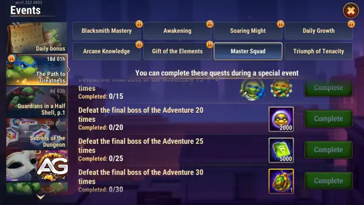
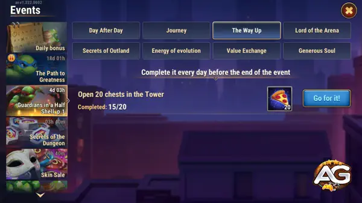

Este artigo fornece um guia abrangente sobre os recursos, mecânicas e recompensas do evento. Prepare-se para aproveitar ao máximo esta oportunidade única na vida!

Ilustração do Evento Guardiões em Meio a Conchas do jogo Hero Wars Alliance, desenvolvido pela Nexters.
Prepare-se para mergulhar na ação eletrizante do evento "Guardiões em Meio a Conchas", onde as Tartarugas Ninja fazem sua estreia épica em Dominion! De 2 a 22 de dezembro, este evento por tempo limitado estará disponível para jogadores a partir do nível de equipe 15. É sua única chance de recrutar os amados heróis ninjas, desbloquear skins exclusivas e garantir upgrades poderosos.
Por que você não pode perder o evento Guardiões em Meio a Conchas
O evento "Guardiões em Meio a Conchas" é a porta de entrada exclusiva para obter as Tartarugas Ninja e seus recursos especializados. Após o evento, esses heróis e seus upgrades não estarão disponíveis em baús, comerciantes ou outras fontes, tornando a participação essencial para jogadores dedicados.
Veja o que torna este evento especial:
Adquira as Tartarugas Ninja como uma unidade de herói individual.
Desbloqueie skins únicas para Ishmael e Luther.
Ganhe itens exclusivos como o Talismã da Concha e recursos exclusivos do evento.
Nota: Embora upgrades futuros para as tartarugas sejam possíveis, você deve convocá-las durante este evento para acessar essas melhorias mais tarde.
Como começar no evento
A jornada começa ao completar a primeira missão no Mapa de Aventura, onde os jogadores recebem as Tartarugas Ninja com uma estrela. A partir daí, você pode:
Coletar Pedras da Alma, Pedras de Skin e fragmentos de Armas de Artefato na loja do evento.
Ganhar recompensas através de missões de aventura e tarefas do evento.
Progredir em uma história envolvente que revela a chegada das Tartarugas Ninja em Dominion.
Vamos explorar os recursos do evento para um jogo ideal.
Explorando o Mapa de Aventura
O Mapa de Aventura é o coração do evento, guiando os jogadores por cinco capítulos de batalhas e história. Cada capítulo oferece missões que revelam a história das Tartarugas Ninja enquanto apresentam oportunidades para ganhar recompensas valiosas.
Como acessar o Mapa de Aventura
Abra o menu Temporada na tela principal.
Toque em Iniciar a Aventura para começar.
Mecânicas de jogo
Use Fatias de Energia para progredir nas missões. Essas regeneram a cada hora, até um máximo de 200, e também podem ser ganhas através de tarefas.
Derrotar monstros e chefes recompensa você com itens como Moedas da Concha, Pedras da Alma e Pedras de Skin.
Dicas profissionais para lutas contra chefes
Os chefes têm mais saúde que inimigos regulares, mas sua saúde não é restaurada entre as tentativas. Planeje sua equipe estrategicamente para maximizar o dano em várias rodadas. Tenha em mente:
Fatias de Energia são consumidas, independentemente de você vencer ou perder uma batalha contra um chefe.
Use o ícone de ponto de interrogação em batalhas desafiadoras para preparar sua equipe para o sucesso.
Tartarugas Ninja como Heróis
No evento, as Tartarugas Ninja operam como uma única unidade de herói. Enquanto sua força combinada as torna formidáveis, elas compartilham os mesmos:
Artefatos
Skins
Atributos, incluindo saúde e poder de ataque
Essa configuração única garante upgrades simplificados e uma experiência de jogo coesa.
Como fortalecer as Tartarugas
Coletar Pedras da Alma para melhorar o nível de estrela delas.
Usar Pedras de Skin exclusivas do evento para aprimorar skins especiais.
Reunir fragmentos de Armas de Artefato para impulsionar suas capacidades em combate.
Loja do Evento: desbloqueie recompensas exclusivas
A loja do evento oferece uma riqueza de recursos para aprimorar seus heróis. Usando moedas ganhas em missões e tarefas, os jogadores podem adquirir:
Pedras da Alma e Pedras de Skin das Tartarugas Ninja
Talismã da Concha para bônus adicionais
Fragmentos da Arma de Artefato das tartarugas
Recursos adicionais como Fatias de Energia, Energia Engarrafada e Bonecos da Natureza

Evento Guardiões em Meio a Conchas no Hero Wars.
Imagem obtida de HWA Library.
Moedas na Loja
Moedas das Tartarugas Ninja: Obtidas em missões e tarefas.
Mutacápsulas: Obtidas ao derrotar o chefe final ou comprando ofertas especiais.
Moedas da Concha: Distribuídas através de anúncios oficiais do evento.
Estratégia para Ganhar o Talismã da Concha no Evento
Para conquistar com sucesso o Talismã da Concha no evento "Guardiões em Meia Concha", é crucial maximizar seu progresso gerenciando eficientemente seus recursos de Fatia de Energia. Aqui está uma estratégia detalhada para ajudá-lo a alcançar esse objetivo:

Missão Talismã das Tartarugas Ninja, Hero Wars Alliance.
Maximizando Fatias de Energia
Para avançar na campanha do evento, você precisa de um fornecimento consistente de Fatia de Energia. Um método confiável é completar a missão diária de abrir 20 Baús da Torre. Aqui está como fazer isso de forma eficaz:
Baús Gratuitos Diários: Você pode abrir 15 Baús da Torre gratuitamente todos os dias.
Abrindo Baús Extras: Para completar a missão, abra 5 baús adicionais por dia. Foque nos andares mais baixos da Torre, onde o custo por baú é de apenas 50 Esmeraldas.
Análise de Custo: Você gastará 50 Esmeraldas por baú, totalizando 250 Esmeraldas por dia.
Recompensa Fatia de Energia: Ao completar essa missão diária, você ganhará 20 Fatias de Energia por dia.
Duração do Evento: Durante os 21 dias do evento, você gastará 5.250 Esmeraldas no total e ganhará 420 Fatias de Energia adicionais.

Maximizando Fatias de Energia, Hero Wars Alliance.
Essa energia extra aumentará significativamente sua capacidade de progredir na campanha, ajudando você a completar mais missões e, por fim, conquistar o Talismã da Concha.
O Melhor Time para Progresso na Campanha
Para enfrentar até os níveis mais desafiadores da campanha do evento, você precisa de uma equipe poderosa e sinérgica. A Equipe Eternidade, composta por Dante, Iris e Octavia, é a escolha ideal para este evento.
Por que a Equipe Eternidade?
Dante: Agilidade excepcional e alta sobrevivência, ideal para esquivar de chefes de alto dano.
Iris: Oferece dano explosivo e pode enfraquecer inimigos com suas habilidades poderosas.
Octavia: Essencial para controle de multidão e dano em área (AoE), garantindo a eliminação eficiente das ondas inimigas.
Utilizando essa composição de equipe, você poderá gerenciar os custos de energia de forma eficaz e maximizar suas chances de sucesso, mesmo nas fases mais difíceis da campanha.
Assista à Estratégia em Ação
Confira o vídeo abaixo para um guia detalhado sobre como usar essa equipe para dominar a campanha:
Vídeo: Melhor equipe para derrotar todos os chefes nos Eventos das Tartarugas Ninja Hero Wars Mobile
Skins Exclusivas e Ofertas Especiais
Durante o evento, os jogadores podem adquirir skins únicas para Ishmael e Luther, além de recursos adicionais para as Tartarugas Ninja. Esses itens de edição limitada adicionam um toque de personalização enquanto melhoram o desempenho de sua equipe.
Nota: Qualquer recurso não utilizado do evento será convertido em Bonecos da Natureza após o término do evento, oferecendo uma pequena compensação para as moedas não gastas.
Recompensas Principais e Desafios
À medida que você progride, o evento recompensa os jogadores com diversos upgrades e itens colecionáveis. De baús raros a artefatos poderosos, cada missão oferece incentivos emocionantes.
Recompensas das Missões de Aventura
Pedras da Alma das Tartarugas Ninja
Pedras de Skin
Moedas do evento para compras na loja
Recompensa Especial de Marco: Derrotar o chefe final 30 vezes concede o cobiçado Talismã da Concha.
Missões do Evento Guardiões em Meio a Conchas
Desta vez, o evento das Tartarugas Ninja Mutantes apresentando um novo herói será dividido em três etapas, diferentemente dos eventos anteriores que eram divididos apenas em duas. A principal diferença entre as três etapas está nas missões "Segredos de Outland" e "Abrir Baús Heroicos". Cada etapa oferece marcos e recompensas únicas nessas missões, adicionando variedade e um desafio prolongado para os jogadores. Esse formato de três fases melhora a dinâmica do evento e oferece mais oportunidades para engajar e planejar estratégias ao longo de um período mais longo.
O que acontece se eu perder o evento? Infelizmente, você não poderá convocar as Tartarugas Ninja ou obter seus recursos após o término do evento.
Posso melhorar as tartarugas no futuro? Sim, mas apenas se você convocá-las durante este evento.
O que são Mutacápsulas e como obtê-las? Mutacápsulas são uma moeda obtida ao derrotar o chefe final ou comprando ofertas especiais.
Como altero os níveis de dificuldade nas missões de aventura? Toque no botão Alterar antes de iniciar uma missão. Dificuldades mais altas oferecem melhores recompensas.
As batalhas contra chefes consomem Fatias de Energia mesmo que eu perca? Sim, cada tentativa consome Fatias de Energia, independentemente do resultado.
As moedas do evento restantes serão mantidas? Não, moedas não utilizadas serão convertidas em Bonecos da Natureza após o término do evento.
Conclusão
O evento Guardiões em Meio a Conchas é imperdível para os fãs das Tartarugas Ninja e de Dominion. Repleto de batalhas emocionantes, recompensas únicas e uma história imersiva, é a oportunidade perfeita para expandir seu elenco e mostrar suas habilidades. Não perca a chance de recrutar os lendários heróis ninjas e garantir seus upgrades exclusivos – este evento é verdadeiramente único!
Você gostou das nossas dicas do evento das Tartarugas Ninja? Há algo que não entendeu ou gostaria de sugerir mudanças? Convidamos você a se juntar à nossa sessão de comentários na página do Alexandre Games Blog. Não hesite em expressar sua opinião, clarificar suas dúvidas e compartilhar sua sugestões. Clique no botão abaixo para começar:
 Hero Wars") Como Derrotar Cada Herói - Hero Wars
Como Derrotar Cada Herói - Hero Wars
 Tier List Hero Wars JvJ
Tier List Hero Wars JvJ